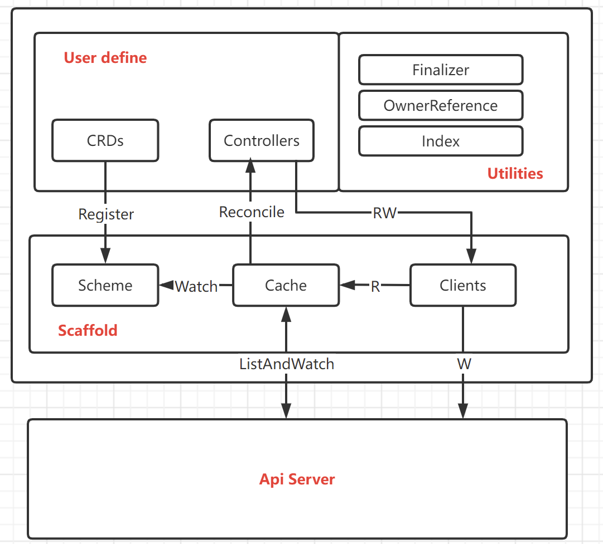

kubebuilder 笔记
导读：自定义资源 CRD（Custom Resource Definition）可以扩展 Kubernetes API，掌握 CRD 是成为 Kubernetes 高级玩家的必备技能，本文将介绍 CRD 编写框架 Kubebuilder基本使用方法，让您真正理解并能快速开发 CRD。
Kubebuilder 是一个使用 CRDs 构建 K8s API 的 SDK，主要是：
提供脚手架工具初始化 CRDs 工程，自动生成 boilerplate 代码和配置；
提供代码库封装底层的 K8s go-client；
方便用户从零开始开发 CRDs，Controllers 和 Admission Webhooks 来扩展 K8s。
使用步骤
下载kubebuilder
1
2
3curl -L -o kubebuilder https://go.kubebuilder.io/dl/latest/$(go env GOOS)/$(go env GOARCH)
chmod +x kubebuilder && mv kubebuilder /usr/local/bin/
create project
1
2mkdir -p ~/projects/guestbook
cd ~/projects/guestbook
init project
1
2
3
4
5kubebuilder init --domain my.domain --repo my.domain/guestbook
example：
kubebuilder init --domain isrc.dataplatform --repo isrc.dataplatform/dataproduct
kubebuilder init --domain isrc.dataplatform --repo isrc.dataplatform/productmanagercreate a api
1
2
3
4
5kubebuilder create api --group webapp --version v1 --kind Guestbook
example:
kubebuilder create api --group webapp --version v1 --kind DataProductManager
kubebuilder create api --group webapp --version v1 --kind DataProductcreate crd
1
make install
create controller
1
2
3
4
5
6
7
8
9
10
11
12本地部署：make run
集群部署：
1. build image
$root: make docker-build docker-push IMG=<some-registry>/<project-name>:tag
注：
* 修改Dockerfile，gcr.io/distroless/static:nonroot 这个镜像国内拉不下来。 FROM gcr.io/distroless/static:nonroot 改成 FROM golang:1.16。
* Dockerfile中在 RUN go mod download 之前加上 ENV GOPROXY=https://goproxy.cn,direct，或者RUN go env -w GOPROXY=https://goproxy.cn,direct 用于修改代理
2. deploy controller to k8s
$root: make deploy IMG=<some-registry>/<project-name>:tag
注：
* controller中有两个容器， 一个使用的是上面的build出来的image，另一个是gcr.io/kubebuilder/kube-rbac-proxy:v0.8.0 这个image没有国内也拉不下来。 使用国内替代的镜像 docker pull katanomi/kubebuilder-kube-rbac-proxy:v0.8.0(修改文文件 config/default/xxx_proxy_xxx.yaml 文件中的image)修改后的Dockerfile
1
2
3
4
5
6
7
8
9
10
11
12
13
14
15
16
17
18
19
20
21
22
23
24
25
26
27
28
29
30# Build the manager binary
# image: data-product-manager-controller:test-0.1
FROM golang:1.16 as builder
WORKDIR /workspace
# Copy the Go Modules manifests
COPY go.mod go.mod
COPY go.sum go.sum
# cache deps before building and copying source so that we don't need to re-download as much
# and so that source changes don't invalidate our downloaded layer
RUN go env -w GOPROXY=https://goproxy.cn,direct
RUN go mod download
# Copy the go source
COPY main.go main.go
COPY api/ api/
COPY controllers/ controllers/
# Build
RUN CGO_ENABLED=0 GOOS=linux GOARCH=amd64 go build -a -o manager main.go
# Use distroless as minimal base image to package the manager binary
# Refer to https://github.com/GoogleContainerTools/distroless for more details
#FROM gcr.io/distroless/static:nonroot
FROM golang:1.16
WORKDIR /
COPY --from=builder /workspace/manager .
USER 65532:65532
ENTRYPOINT ["/manager"]
create cr
1
kubectl apply -f config/sample/xxxx.yaml
- 其他的具体开发只需要关注controller.go 以及api目录下的文件即可
operator开发
前置知识
operator 可以简单理解为 cr + crd +controller
crd： 自定义的资源
cr：自定义资源的一个实例
controller： 实例的控制逻辑
（可以理解为crd是一种类， cr是这个类的一个实例， 这个cr要干什么的逻辑定义在controller中）
生成代码结构
1 | ├── Dockerfile |
目录解析
Dockerfile： 用于build controller镜像
Makefile： 编译部署管理工具
api/v1/xxxx_types.go： 定义crd字段， 主要定义spec以及status。 controller会根据spec中的字段值，做出相应的行为
1
2
3
4
5
6
7
8
9
10
11
12
13
14
15
16
17
18
19
20
21
22
23
24
25
26
27
28
29
30
31
32
33
34
35
36
37
38// GuestbookSpec defines the desired state of Guestbook
type GuestbookSpec struct {
// INSERT ADDITIONAL SPEC FIELDS - desired state of cluster
// Important: Run "make" to regenerate code after modifying this file
// Foo is an example field of Guestbook. Edit guestbook_types.go to remove/update
Foo string `json:"foo,omitempty"`
FirstName string `json:"firstname"`
LastName string `json:"lastname"`
}
// GuestbookStatus defines the observed state of Guestbook
type GuestbookStatus struct {
// INSERT ADDITIONAL STATUS FIELD - define observed state of cluster
// Important: Run "make" to regenerate code after modifying this file
Status string `json:"Status"`
}
//+kubebuilder:object:root=true
//+kubebuilder:subresource:status
// Guestbook is the Schema for the guestbooks API
type Guestbook struct {
metav1.TypeMeta `json:",inline"`
metav1.ObjectMeta `json:"metadata,omitempty"`
Spec GuestbookSpec `json:"spec,omitempty"`
Status GuestbookStatus `json:"status,omitempty"`
}
//+kubebuilder:object:root=true
// GuestbookList contains a list of Guestbook
type GuestbookList struct {
metav1.TypeMeta `json:",inline"`
metav1.ListMeta `json:"metadata,omitempty"`
Items []Guestbook `json:"items"`
}
- config目录 ： 该目录下的文件主要一些用于生成crd， cr以及controller部署文件（利用bin目录下的两个工具 controler-gen 以及 kustomize）
controller目录： 该目录下的xxxx_controller.go 是最重要的文件， 用户需要在这个文件中配合api/v1/xxx_types.go填写逻辑代码。 只需要填写reconcile方法即可。
1
2
3
4
5
6
7
8
9
10
11
12
13
14
15
16
17
18
19
20
21
22
23
24
25
26
27
28
29
30
31
32
33func (r *GuestbookReconciler) Reconcile(ctx context.Context, req ctrl.Request) (ctrl.Result, error) {
_ = log.FromContext(ctx)
// your logic here
// _ = r.Log.WithValues("apiexamplea", req.NamespacedName)
obj := &webappv1.Guestbook{}
if err := r.Get(ctx, req.NamespacedName, obj); err != nil {
log.Log.Error(err, "Unable to fetch object")
return ctrl.Result{}, nil
} else {
log.Log.Info(time.Now().Location().String())
log.Log.Info("Geeting from Kubebuilder to", "firstName", obj.Spec.FirstName, "lastName", obj.Spec.LastName)
}
// 初始化 CR 的 Status 为 Running
obj.Status.Status = "Running"
if err := r.Status().Update(ctx, obj); err != nil {
log.Log.Error(err, "unable to update status")
} else {
// err2 := r.Delete(ctx, obj, client.PropagationPolicy(metav1.DeletePropagationBackground))
// if err2 != nil {
// log.Log.Error(err2, "")
// }
log.Log.Info("Getting status from Kubebuilder", "status", obj.Status.Status)
}
return ctrl.Result{}, nil
}
// return ctrl.Result{}, nil 正常结束
// return ctrl.Result{}, err 会重新入工作队列， 会被再次触发reconcile
// return ctrl.Result{Requeue:true}, nil 重新入工作队列
// eturn ctrl.Result{RequeueAfter: time.Minute}, nil 一分钟以后再入工作队列1
2
3
4
5
6
7
8
9// SetupWithManager sets up the controller with the Manager.
func (r *GuestbookReconciler) SetupWithManager(mgr ctrl.Manager) error {
return ctrl.NewControllerManagedBy(mgr).
For(&webappv1.Guestbook{}).
Owns(&appsv1.Deployment{}).
// Watches(&source.Kind{Type: &apps.Deployment{}}, &handler.EnqueueRequestForObject{}).
Complete(r)
}
// 这个方法用于表示需要监控哪些资源， 上面的代码表示监控 GuestBook这个资源以及跟他关联的deployment资源， 一旦这两种两种资源出现修改，会触发调用reconcile方法
main.go: 整个operator的入口
1
2
3
4
5
6
7
8
9
10
11
12
13
14
15
16
17
18
19
20
21
22
23
24
25
26
27
28
29
30
31
32
33
34
35
36
37
38
39
40
41
42
43func main() {
...
// 1 初始化manager
mgr, err := ctrl.NewManager(ctrl.GetConfigOrDie(), ctrl.Options{
Scheme: scheme,
MetricsBindAddress: metricsAddr,
Port: 9443,
HealthProbeBindAddress: probeAddr,
LeaderElection: enableLeaderElection,
LeaderElectionID: "dfbd12f6.isrc.dataplatform",
})
if err != nil {
setupLog.Error(err, "unable to start manager")
os.Exit(1)
}
// 2 init Reconciler（Controller）
if err = (&controllers.DataProductManagerReconciler{
Client: mgr.GetClient(),
Scheme: mgr.GetScheme(),
}).SetupWithManager(mgr); err != nil {
setupLog.Error(err, "unable to create controller", "controller", "DataProductManager")
os.Exit(1)
}
//+kubebuilder:scaffold:builder
if err := mgr.AddHealthzCheck("healthz", healthz.Ping); err != nil {
setupLog.Error(err, "unable to set up health check")
os.Exit(1)
}
if err := mgr.AddReadyzCheck("readyz", healthz.Ping); err != nil {
setupLog.Error(err, "unable to set up ready check")
os.Exit(1)
}
setupLog.Info("starting manager")
// 3 start manager
if err := mgr.Start(ctrl.SetupSignalHandler()); err != nil {
setupLog.Error(err, "problem running manager")
os.Exit(1)
}
}
kubebuilder 与 k8s的交互原理

- User Define：自定义部分包括crds，以及controllers。Crd即自定义资源， controller即利用go语言开发的处理逻辑， controller通过client读资源进行读写。
- Utilities： 辅助工具，包括finalizer， OwnerReference以及index。
- Finalizer： 删除资源之前清理环境
- OwnerReference：用于资源关联， 使得关联对象的变更也可以触发owner对象controller的Reconcile方法，另外owner资源删除，利用k8s gc，被owner的资源也会被联级删除
- Index：controller需要对cache进行查询，index可加快查询速度
- Scaffold： 利用k8s client-go runtime包，实现与k8s api server 交互。主要包括scheme， cache，以及client。
- Scheme： 用于crd 资源注册，提供了kinds与对应的go types的映射
- Cache: 监控scheme中注册的资源， 使用informer机制触发自定义的reconcile逻辑
- Clients： 通过api server 与k8s交互对资源进行读写
Operator处理流程：
1) Crd向scheme注册资源
2) Cache中会生成注册资源对应的informer，用于事件的通知
3) 创建cr或者更新cr在线文件，生成该资源的event，cache watch到该event后将其放入workqueue中
4) Controller中的核心的逻辑代码从workqueue中取出event，触发reconcile方法
5) Controller中reconcile利用controller runtime包对资源进行读写， 写的时候是通过api server， 读的时候是直接读cache
同类工具比较
Operator Framework 与 Kubebuilder 很类似，这里因为篇幅关系不再展开。
k8s-operator demo gitee repo
注意点
- 使用 OwnerRefrence 来做资源关联，有两个特性：
- Owner 资源被删除，被 Own 的资源会被级联删除，这利用了 K8s 的 GC；
- 被 Own 的资源对象的事件变更可以触发 Owner 对象的 Reconcile 方法；
- 使用 Finalizer 来做资源的清理。不使用 Finalizer 时，资源被删除无法获取任何信息；
- 对象的 Status 字段变化也会触发 Reconcile 方法；
- Reconcile 逻辑需要幂等；
小结
Kubebuilder 提供的功能对于快速编写 CRD 和 Controller 是十分有帮助的，无论是 Istio、Knative 等知名项目还是各种自定义 Operators，都大量使用了 CRD，将各种组件抽象为 CRD，Kubernetes 变成控制面板将成为一个趋势，希望本文能够帮助大家理解和把握这个趋势。
参考
https://www.cnblogs.com/alisystemsoftware/p/11580202.html